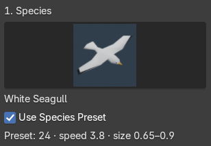
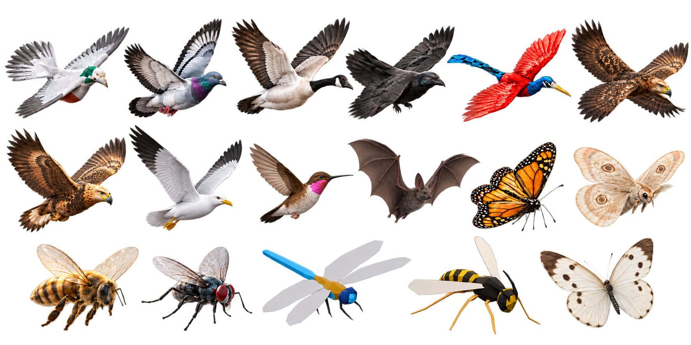
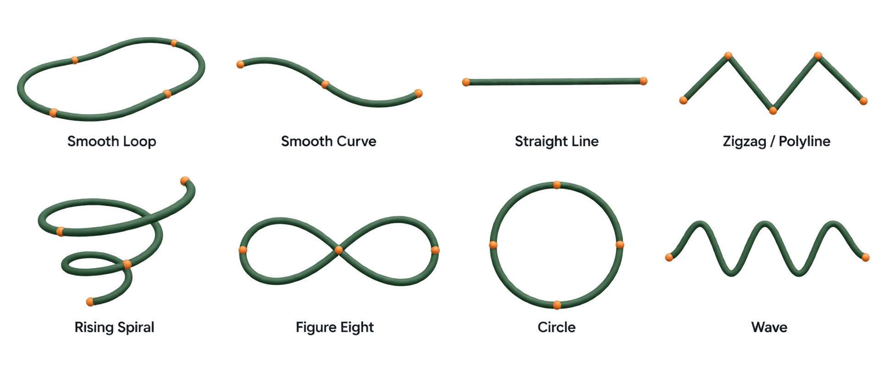
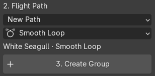
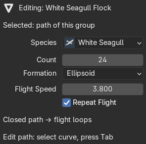

Pick your species
Choose from 17 bird, bat, and insect variants. Each preset gives you a starting point for size, speed, and motion.

Animated bird flocks. Beautiful insect swarms.
Bring natural movement to Blender, one simple path at a time.
From white seagulls to glowing moths. Explore 17 variants, each with animated wings and a flight preset.

The flight path collection
Start with a ready-made curve. Shape the route, adjust the flow, and make it your own.

Start with a species, give it a direction,
and let your scene take flight.
Choose from 17 bird, bat, and insect variants. Each preset gives you a starting point for size, speed, and motion.

Start with a ready-made shape, use your own curve, or send a flock through the camera frame.

Click Create Group, play the timeline, then fine-tune the count, flight speed, and motion directly in your scene.

Shape the big picture.
Then bring the little details to life.
Guide your flock along an editable Blender curve. Choose from eight path shapes, use a selected curve, or create a flight through your active camera.
Compose an elegant V formation or a loose cloud of movement. Adjust the count, spacing, density, and variation to suit the shot.
Mix flapping and gliding with banking, wandering, and variation. Give your birds individual movement while keeping the flock together.
Guide movement toward a target and give your flock room to pass around obstacles. Choose a bypass direction and clearance to fit your environment.
Avoidance routes around the combined bounds of the obstacle collection. It does not simulate exact animated-mesh collisions.
From open skies to the smallest movement
in a quiet garden.
Add a seagull flock, a dragonfly swarm, or the gentle glow of moths. Each variant includes animated wings, a flight preset, and a distant LOD model.
Pigeon · Pigeon 2 · Goose · Crow · Seaside Hill Bird · Frey's Bird · Freyja's Bird · White Seagull · Hummingbird
Monarch · Bee · Fly · Glowing Moth · Dragonfly · Wasp · White Butterfly
Bat
Sample an animated mesh or rig with Bake Model Frames, then use the resulting frame collection in your flock.
Use viewport fraction, distant LOD, and camera culling to manage your scene. Cache the full flock when your shot is ready.
A focused toolkit for adding flocks and swarms to your Blender scenes.
Visit MambaCG on SuperhiveYou can create and adjust procedural flight live. Once your motion is ready, use Bake Animation to cache the scene frame range, then play the saved result with Use Baked Animation. Save your .blend file before baking and again afterward. If you change the path or flock settings, clear or re-bake the cache. Full-flock baking requires Blender 4.1 or newer.
Yes. Select an animated mesh or an armature with child meshes and use Bake Model Frames. Assign the generated frame collection to your flock.
Yes. Paths remain editable Blender curves. Adjust the curve, speed, or flock settings as you develop the shot. Re-bake if you are using a cached flock.
The flock takes a detour around one enclosing box for the obstacle collection, expanded by flock spread and clearance. It does not find gaps between individual obstacles or simulate exact wing collisions.
Open the sidebar in the 3D View with N and choose Quick Birds & Insects. Select a species and path, then click Create Group.